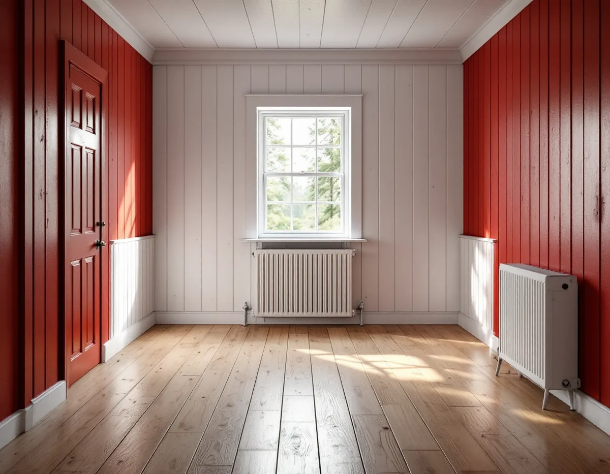
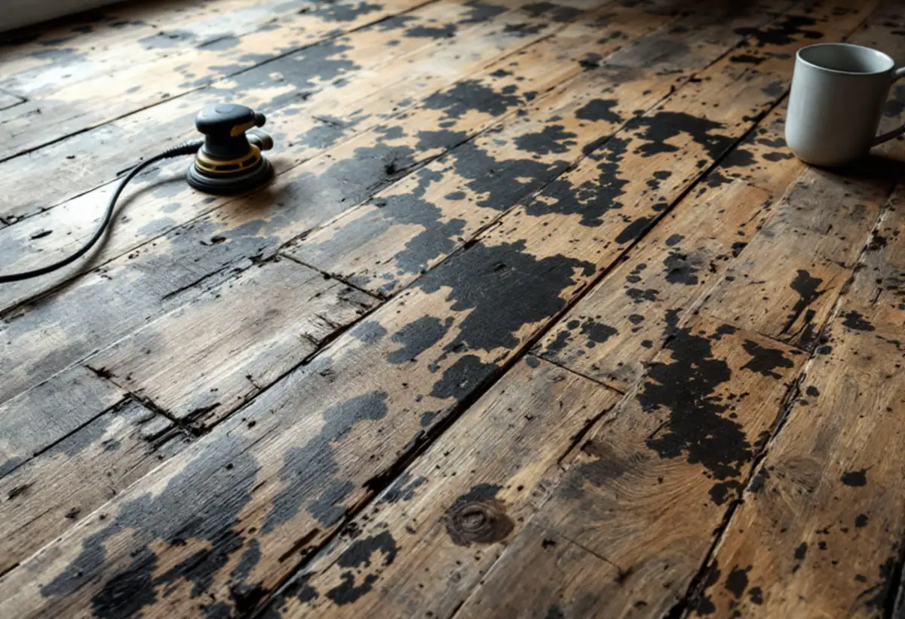
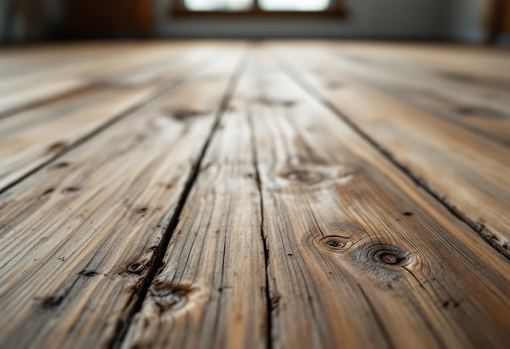

Platsbesök
Vi ser på golvet och frågar hur huset har använts.

I Österåker har många sommarhus och stugor byggts om för att gå att bo i året runt.
Beskriv jobbet kort.
Något blev fel. Kontrollera uppgifterna eller ring 08 12 410 276.
Vi tittar på jobbet på plats innan du får offert.
Du ser vad som ingår och vad det kostar.
Vi drar av ROT direkt och sköter ansökan.
Geal Entreprenad AB, Bromma. Org.nr 559303-7566.

Golven från sommartiden ligger ofta kvar, ibland under mattor från senare decennier. Geal Entreprenad AB slipar och behandlar golv i Åkersberga, Svinninge och resten av kommunen och börjar med att ta reda på vad golvet har varit med om.
Österåkers kommuns råd och riktlinjer för byggande i Svinninge, från 2008, beskriver området som ett blandområde med permanent- och fritidsboende där åretruntboendet successivt ökat. Fritidshusen byggs om och till för att passa dagens krav på permanentbostäder, och många hus ersätts av nya villor. Svinningeudd och Nantes beskrivs som kommunens äldsta och bäst bevarade sommarhusbebyggelse.
Riktlinjerna berättar också om sportstugorna från 1930-talet: enkla, ändamålsenliga envåningshus med den timrade enkelstugan som förebild, ofta uppförda som typhus och vinterbonade för att kunna användas på vintern. Efter sekelskiftet 1900 blev den röda stugan med vita knutar populär som sommarvilla eller egnahem.

SCB:s bostadsstatistik för 2025 räknar 13 635 lägenheter i småhus i Österåkers kommun, och 11 981 av dem är äganderätter. 814 finns i hus byggda före 1931 och 330 i hus från 1931–1940, medan flest tillkom på 1960- och 1970-talen, 5 215 tillsammans. Golven i huset beror alltså mycket på när det byggdes och hur det har använts.
Ett hus som stått kallt på vintern och nu värms året runt utsätter golvet för andra förhållanden än förr. Byggnadsvårdsföreningen påminner i ett svar om att golvet rör sig och att ett torrt klimat ger hoptorkade plankor. När en läsare hittade ett furugolv med upp till 5 millimeter breda springor under korkmattan i ett sommarhus från omkring 1900 var svaret att det inte är så mycket på så breda tiljor, och att det snyggaste är att lägga om golvet och slå ihop brädorna.
En läsare skrev till Byggnadsvårdsföreningen om ett torp där plastmattan i köket hade rivits och golvet under verkade tjärat, mörkt och lite klibbigt. Svaret var att golvet antagligen tagit färg av tjärpapp som lagts som underlag till linoleummattor. Föreningen föreslog att prova att lösa upp det med T-sprit eller balsamterpentin och att använda mask, och varnade för att det kan bli kladd av att slipa på tjäran.
Föreningen skriver också att man helst bör undvika golvslip på sådana golv, eftersom den tar ganska mycket av brädornas tjocklek och lämnar en slät och trist yta, och att man i första hand kan slipa med en liten excenterslip på 125–150 millimeter. Vi provar oss fram på en liten yta innan vi väljer metod för hela rummet.
När golvet är slipat ska det behandlas efter hur huset används nu. Golvbranschens riktlinjer SLIP 22 säger att ytbehandling inte ska göras när luftfuktigheten inomhus ligger utanför 30–60 procent eller fuktkvoten i trät utanför 6–10 procent. I ett hus som nyss börjat värmas året runt mäter vi därför innan vi lackar eller oljar.
Efter tjärpapp kan föreningen rekommendera linoljefärg, med reservationen att tjäran kan slå igenom. Ett såpat eller oljat golv är enklare att bättra på i ett hus där det går in och ut mycket. Ska golvet bytas i stället finns mer under golvläggare i Österåker.
Vi ser på golvet och frågar hur huset har använts.
Rengöring eller slipning provas på en liten yta.
Rivning, slipning och ytbehandling var för sig.
Mattor rivs, lister lossas och spikar tas om hand.
Så skonsamt som golvet tillåter.
Efter fuktmätning, med det du valt.
Skatteverket räknar slipning av golv som rotarbete i ett småhus, och till småhus räknas enligt Skatteverket både villor, radhus och fritidshus. Huset ska användas som bostad och ägas av dig.
Avdraget är högst 30 procent av arbetskostnaden, som mest 50 000 kronor per person och år, och rot och rut får tillsammans vara högst 75 000 kronor. Material och resor ger inget avdrag. Geal drar avdraget direkt på fakturan.
Golvytan, om mattor ska rivas, golvets tidigare behandling, hur mycket springor och lagningar som behövs och vilken ytbehandling du väljer. Efter ett gratis platsbesök får du ett skriftligt kostnadsförslag.
Parkett, trägolv, klinker och slipning.
Golvläggning i Stockholm →Takbyte, takbesiktning och plåtarbeten.
Takläggare i Österåker →Svinninge, sommarvillor och sportstugor.
Takrenovering i Österåker →Uthyrning, kulturmiljö och fornlämningar.
Attefallshus i Österåker →VA-utbyggnad, öar och vattensmarta val.
Badrumsrenovering i Österåker →Rivning, markarbete och gatukostnader.
Byggföretag i Österåker →Sommarvillornas fasadkulörer.
Fasadmålning i Österåker →Skärgårdshus, fritidshus och villor i Österåker.
Fasadrenovering i Österåker →Varsamhet, kulturvärden och kustlägen i Österåker.
Fönsterbyte i Österåker →Sommarvillorna i Svinninge.
Fönsterrenovering i Österåker →Jämna golv och färre trösklar.
Golvläggare i Österåker →Helårshus, brunn och avlopp.
Köksrenovering i Österåker →Sommarvillor, röda stugor och efterkrigsvillor.
Målare i Österåker →Plåtdetaljer på sommarvillorna.
Plåtslagare i Österåker →Bryggor, altaner och äldre snickerier.
Snickare i Österåker →Lertegel, lovfrågan och återbruk av pannor.
Takbyte i Österåker →Sommarvillan blir åretruntbostad.
Tapetsering i Österåker →Grannmedgivande, strandskydd och utstakning.
Tillbyggnad i Österåker →Fritidshuset, värmen och anmälan.
Totalrenovering i Österåker →Eller ring 08 12 410 276, mån–fre 08–17.
Beskriv jobbet kort.
Något blev fel. Kontrollera uppgifterna eller ring 08 12 410 276.